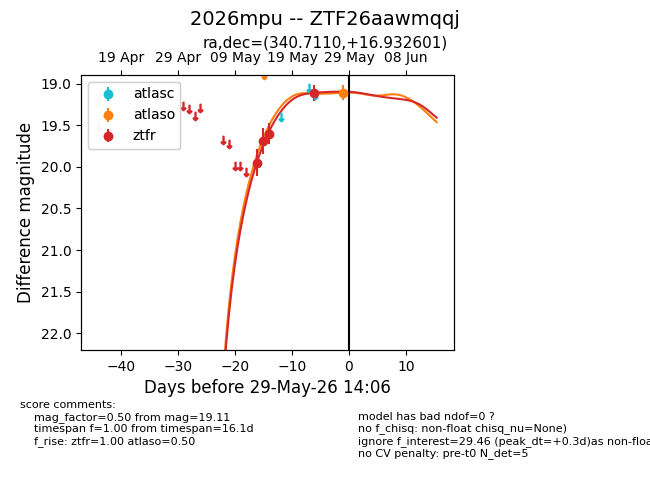
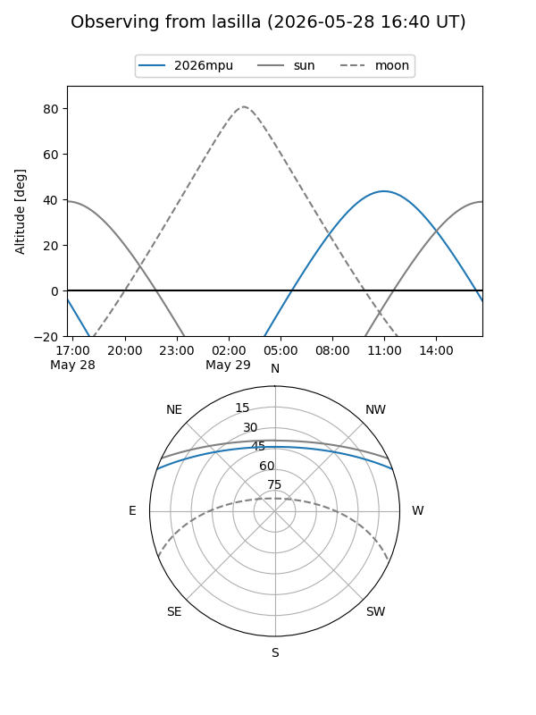
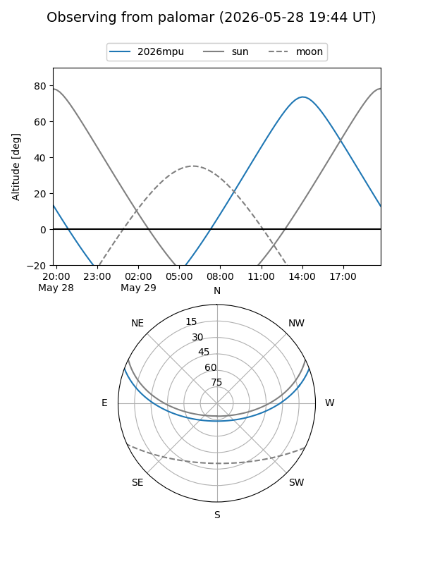
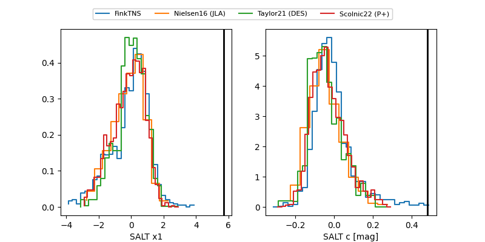

2026mpu
Target 2026mpu at 2026-05-29 14:07
Aliases and brokers:
lsst-FINK: link
lsst-Lasair: link
lsst-ALeRCE: link
ztf-FINK: link
ztf-Lasair: link
ztf-ALeRCE: link
TNS: link
YSE: link
alt names
ZTF26aawmqqj (ztf,fink_ztf)
2026mpu (tns,yse)
Coordinates:
equatorial (ra, dec) = 340.7110,+16.93260
equatorial (HMS+DMS) = 22:42:50.63,+16:55:57.36
galactic (l, b) = (83.9282,-36.01926)
Flags:
Photometry:
last atlaso=19.11, ztfr=19.11
1 atlaso, 4 ztfr detections
Lightcurve

Visibility


Additional plots
